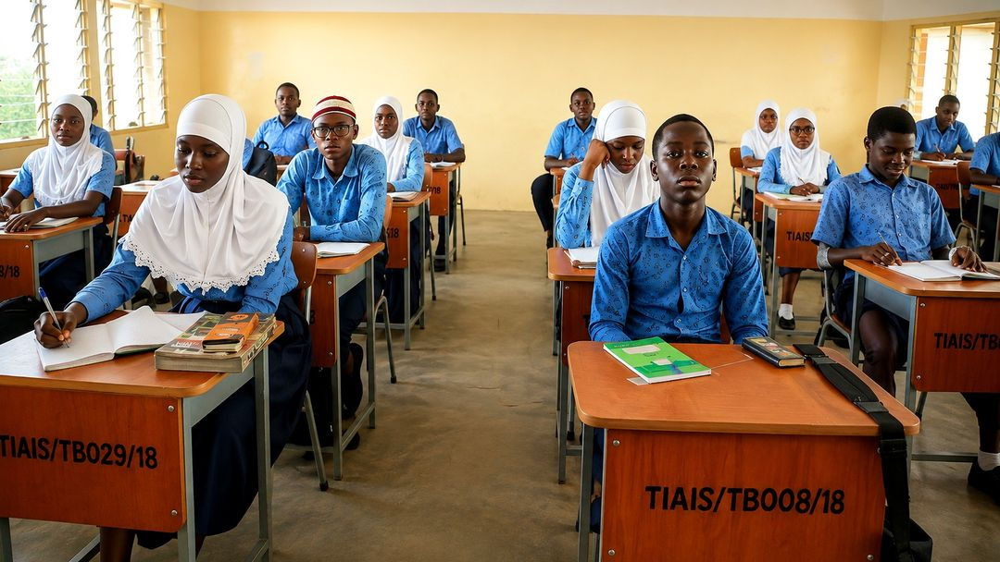

 Official Statement · August 2026A New Vision. A New Chapter. A Brighter Future.AIS's new management has set out a five-part vision centred on academic excellence, discipline, high moral values, integrity and service to humanity.Read full story →
12 AUGManagement transition officially authorisedThe National Headquarters of the Ahmadiyya Muslim Mission, Ghana, has formally authorised the takeover and reorganisation of AIS management and administration.Read story →
AUG 2026A new direction for AISThe new management's statement outlines the school transformation already under way and the priorities guiding its next chapter.Read story →